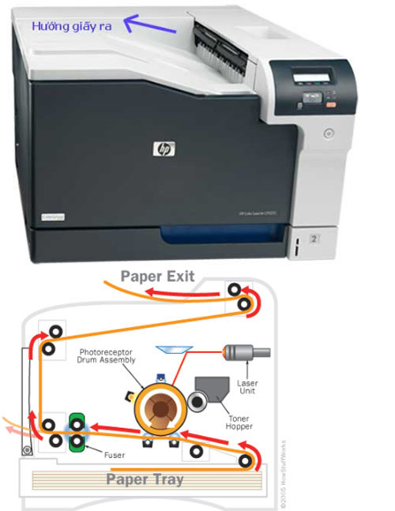
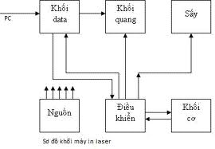
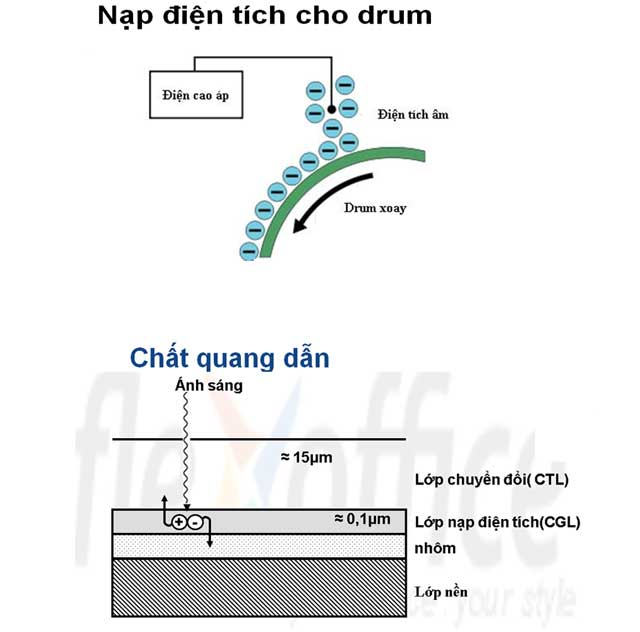
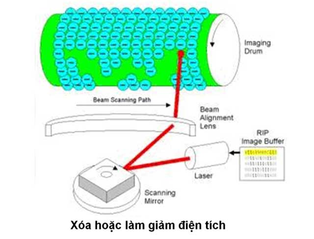
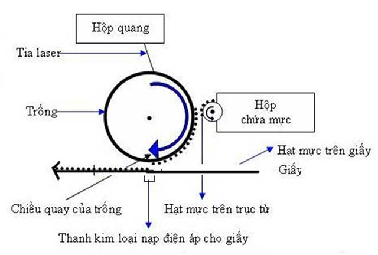
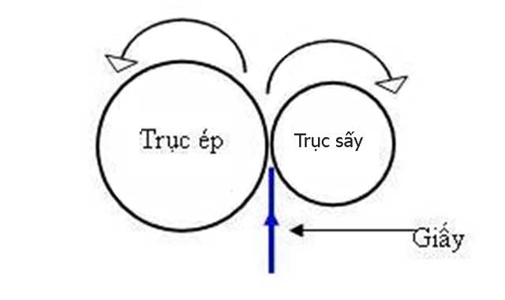

Máy In Laser – Cấu Tạo, Tính Năng và Nguyên Tắc Họat Động Của Máy
Máy in laser là một loại máy in kỹ thuật số theo quy trình xerography, dùng tia laser để tạo ảnh quang điện theo từng dòng in để đưa lên đối tượng in.
Máy in laser hiện là máy in thông dụng trong văn phòng, có khả năng in rất nhanh các văn bản có chất lượng cao trên giấy trắng. Cùng với máy photocopy kỹ thuật số và máy in đa chức năng (Multifunctionprinters = MFPs), máy in thực thi một quá trình in xerographic nhưng khác với máy photocopy tỷ biến ở chỗ hình ảnh trên giấy được in bằng việc quét trực tiếp các chùm tia laser hướng sang thụ quan ánh sáng của máy.

Cấu tạo của máy in laser
Máy in laser có cấu tạo gồm có 6 phần cơ bản được mô tả theo sơ đồ sau

- Khối nguồn: Cung cấp nguồn điện cho máy in.
- Khối điều khiển: là mạch điện tử dùng điều khiển hoạt động của máy in như nhận lệnh in và ra lệnh cho các bộ phận khác hoạt động, kiểm soát lỗi phát sinh đồng thời phát ra thông báo lỗi.
- Khối cơ: là các bánh xe, trục lăng,… dùng để lấy giấy và vận chuyển giấy.
- Khối data: nơi lưu tiếp nhận và xử lý lệnh in từ máy tính.
- Khối quang: là bộ phận sử lý hình ảnh gồm có bộ phận phát ra tia laser và drum
- Khối sấy: nung chảy và sấy khô mực in.
Nguyên tắc hoạt động của máy in laser
Là một trong những máy in tĩnh điện gián tiếp.
Phần quan trọng nhất của máy in laser là trống cảm quang được phủ một lớp phim hợp chất selen nhạy sáng có đặc điểm là trong bóng tối nó có điện trở rất cao và hoạt động như một tụ điện.
Trống được tích điện cao thế khi lăn qua dây tích điện.
Quy trình họat động của máy in laser
Bước 1: Xóa sạch hình ảnh, tài liệu cũ: Máy in sẽ xóa sạch hình ảnh, chữ của bản in cũ được lưu giữ trên Drum (trống của hộp mực in) để tiếp nhận hình ảnh mới.
– Máy in xóa bằng cách dùng thanh gạt mực để gạt đi hết mực thừa còn dính trên Drum .
– Sau đó, drum sẽ quay quanh 1 thanh chỏi, thanh chỏi này xóa hết điện tích trêm drum để bắt đầu 1 chu kỳ mới.
Chú ý kỹ thuật: Khi thanh gạt mực sử dụng lâu thì khi in ra trang giấy sẽ bị lem, có bóng mờ hoặc có các đường màu đen dọc theo trang in ==> phải thay thanh gạt mực.
Bước 2: Tích điện lên drum:
Máy in sẽ tạo ra điện tích âm toàn bộ bề mặt drum bằng cách cho drum quay 1 vòng quanh trục PRC. PRC sẽ làm cho drum nhiễm điện tích âm khoảng -130V, điện tích âm này sẽ hút mực bám lên drum.
Chất quang dẫn trên bề mặt drum, giúp drum có thể tích điện âm khi chiếu ánh sáng laser vào

Bước 3: Xóa, giảm điện tích:
Bộ điều khiển sẽ điều khiển tia laser sẽ chiếu vào vị trí không muốn tạo ảnh, những vị trí này khi in ra sẽ là nền trắng còn vị trí có điện tích âm sẽ có chữ hoặc hình ảnh. Xem hình dưới

Bước 4: Chuyển ảnh lên giấy
Mực in bám lên drum sẽ bị hút sang tờ giấy, vì giấy được tích điện tích dương mạnh (dương hút âm)
Chuyển mực từ Drum sang giấy in

Bước 5: Định hình lên giấy:
Giấy in có mực in đi qua trục sấy (Fuser), trục này tỏa nhiệt khoảng 180 độ C để làm chảy mực in ra, mực in sẽ bám chặc vào giấy in sau đó đưa giấy in ra ngoài.

Ưu và nhược điểm máy in laser
Ưu điểm:
– Máy in laser có thể in nhanh. Cũng không quan trọng lắm nếu bạn chỉ in một vài trang ở một thời điểm. Nhưng khi in với khối lượng cao bạn sẽ nhận thấy sự khác biệt rất rõ.
– Máy in laser tạo ra văn bản màu đen hoàn hảo. nếu công việc của bạn chủ yếu là in văn bản, các bản in đồ họa không được in thường xuyên, máy in laser là một lựa chọn. Máy in laser cũng xử lý các phông chữ nhỏ và đường kẻ nhỏ rất tốt
– Máy in laser được chuẩn bị tốt hơn để xử lý các lệnh in có khối lượng lớn.
Nhược điểm:
– Mực dù tốc độ in nhanh hơn nhưng máy in laser cần có thời gian khởi động trước khi in.
– Mặc dù giá mực in laser rẻ hơn tính trong khoảng thời gian dài nhưng chi phí trả trước cho máy in laser nhiều hơn.
– Máy in laser không thể xử lý nhiều loại giấy hoặc vật liệu in. Bất cứ vật liệu gì nhạy cảm với nhiệt đều không thể chạy qua máy laser.
– Máy in laser gia đình có thể xử lý những bản in đồ họa đơn giản, nhưng hình ảnh yêu cầu chất lượng là một thách thức.
– Tuy cũng có một số máy in laser nhỏ gọn trên thị trường, nhưng phần lớn máy in laser có kích thước lớn và nặng
Cần nạp mực hoặc sửa máy in tận nơi? Mực In Trường Phát có mặt trong 30 phút tại TP.HCM — in test trước khi tính tiền, bảo hành 1 tháng.
0908.327.123 · 0819.007.394 (Zalo cả 2 số)